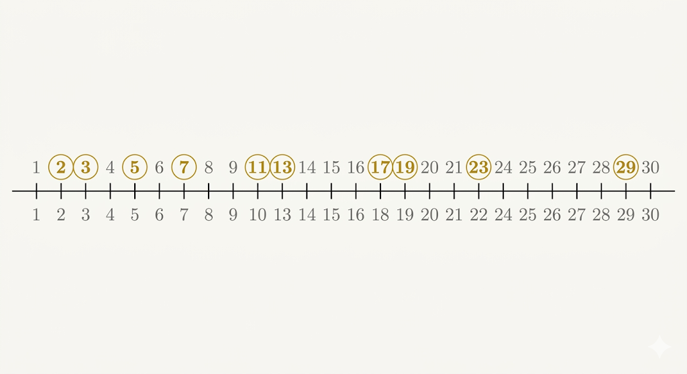
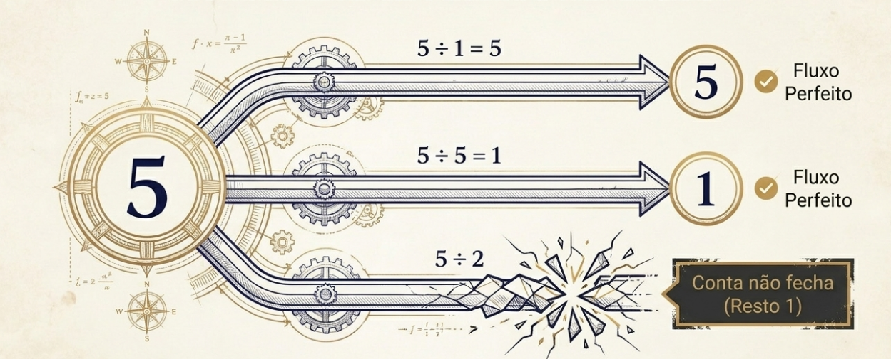
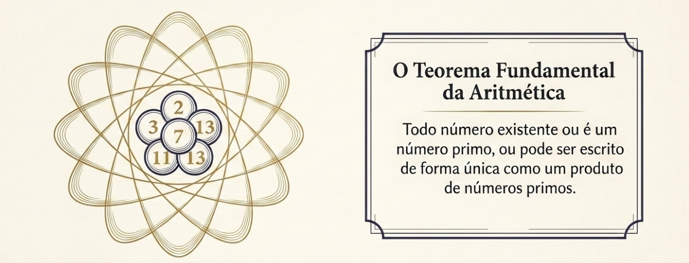
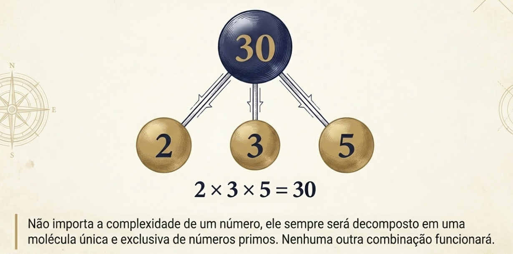
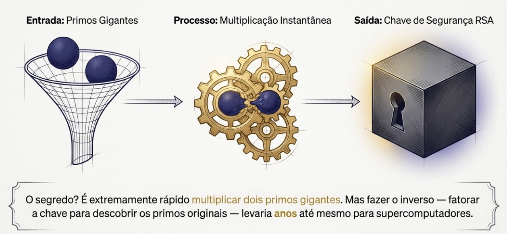
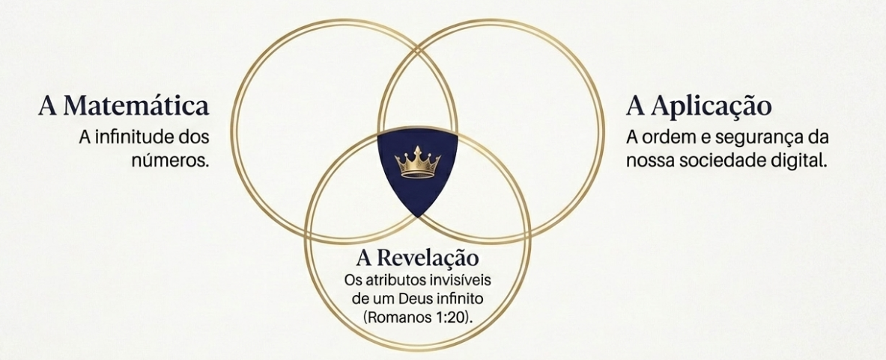

Números Primos, Átomos e Criação
Você sabia que existe um conjunto de números que são anti sociais, não se misturam?
Isso não é uma característica muito boa para as pessoas, não é verdade? Existimos para sermos sociáveis, fomos criados para socializar com Deus e com os homens! Deus viu que o homem estava sozinho na criação, e com isso decidiu criar uma companheira pra ele. Gênesis 2:18.
Os nossos números anti sociais são os chamados números primos. Não sei se você os conhece ou lembra deles da época da escola!
O que são números primos?
Eles têm uma característica interessante. São números que são divisíveis apenas por 1 e por eles mesmos. Se tentarmos fazer a divisão com outros números, a conta não dá exata!
Os primeiros números primos são: 2, 3, 5, 7, 11, 13, 17, 19, 23, 29…

Por exemplo, o 5:
- \(5 \div 1 = 5\) ✅ Fluxo perfeito
- \(5 \div 5 = 1\) ✅ Fluxo perfeito
- \(5 \div 2 = 2\) com resto 1 ❌ A conta não fecha!

Ou seja, o 5 — assim como todos os primos — é anti social: não se divide com mais ninguém além do 1 e de si mesmo!
Os átomos dos números
Os números primos são tão importantes e misteriosos que guardam um segredo ainda maior…
Foi descoberto e provado num teorema famoso que, de certa forma, os números primos são os átomos dos números!

É o Teorema Fundamental da Aritmética. Ele diz basicamente que:
Todo número natural maior que 1 ou é primo, ou pode ser escrito de forma única (sem levar em conta a ordem) como produto de números primos.
É como se os números primos fossem os geradores de todos os outros números! Veja alguns exemplos:
\[30 = 2 \times 3 \times 5\]
\[840 = 2 \times 2 \times 2 \times 3 \times 5 \times 7\]
\[77 = 7 \times 11\]

Não importa a complexidade de um número — ele sempre será decomposto em uma “molécula” única e exclusiva de números primos. Nenhuma outra combinação funcionará.
Os primos são infinitos
Mas quantos desses números anti sociais existem? Será que eles acabam em algum momento?
Euclides, o famoso matemático grego, provou que não. Os primos são infinitos — sempre haverá um novo primo além de qualquer lista que você faça. A prova que ele usou é engenhosa e elegante, digna de um artigo próprio!
E dois mil anos depois, esse mistério continua: os primos são infinitos, mas aparecem de forma aparentemente aleatória. Será que existe alguma ordem escondida nessa distribuição? Foi exatamente essa pergunta que intrigou Bernhard Riemann — ele queria encontrar uma fórmula precisa para contar quantos números primos existem abaixo de um determinado valor. Mas isso é tema para um próximo artigo!
Primos protegem a internet
A história dos primos não termina na matemática pura. Na criptografia, o algoritmo RSA baseia-se na dificuldade de fatorar números inteiros grandes.
O RSA funciona assim: multiplicam-se dois primos enormes para criar uma chave de segurança. Quebrar essa chave exigiria fatorar o resultado — e isso levaria anos, mesmo com computadores potentes.

Riemann estava pensando em matemática pura, sem imaginar que um dia seus estudos protegeriam transações bancárias pela internet! E essas propriedades dos números primos foram descobertas — ninguém criou. Bem… Alguém criou.
O Criador criou
Deus criou todos os números, suas propriedades e, em particular, os números primos. Essas propriedades podem nos revelar um pouco de quem é Deus.
Além disso, Ele deixou essas propriedades para que pudéssemos usá-las e aplicar em várias outras áreas do conhecimento — inclusive em criptografia, para garantir a ordem e a segurança de nossa sociedade.
“A glória de Deus é ocultar certas coisas; tentar descobri-las é a glória dos reis.”
— Provérbios 25:2
Os números primos são infinitos — e nos remetem a um dos atributos invisíveis de Deus: um Deus infinito, eterno, que deixou os números, a natureza e a criação para que o conhecêssemos melhor.
“Porque os atributos invisíveis de Deus, assim o seu eterno poder, como também a sua própria divindade, claramente se reconhecem, desde a criação do mundo, sendo percebidos por meio das coisas que foram criadas.”
— Romanos 1:20
